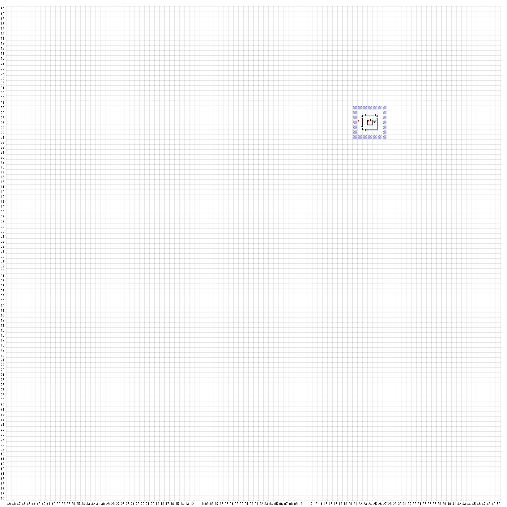

【 東：24，北：24 】
西の遥か彼方にある火を吹く裂け谷から、
遠い過去の遺物のように、
煙の柱が立ち昇っていた。
【 東：25，北：4 】
異様な臭いがするなにかの死骸が、堀を見下ろす
塔の岩棚に放置されている。それは、
元が何であったのかわからないほどに
形が崩れており、どうやって
死んだのかもまったくわからなかった。
（選択）
死骸を詳しく調べる
死骸を塔から落とす
死骸を置いてその場を立ち去る
＞死骸を詳しく調べる
死骸を動かそうとすると、
おそろしく異様な臭いをともないながら
それは爆発し、全員にっ腐った残骸の
雨を降らせた。
（全員ダメージ）
【 東：26，北：24 】
この塔の小部屋には、古くさい破片が
山のように積み重ねられていた。
そのほとんどが腐っているようだった。
（西の壁探す）
宝箱
IRON KEY 2
CLOTH SHIRTS
CLOTH PANTS
【 東：26，北：7 】
なにかおかしいような気がする・・
見張られている
頭上を見上げると、党の屋根を支える木に、
コウモリの大群が絶妙なバランスを取りながら
ぶら下がっていた。
突然、コウモリが襲いかかってきた！
【 東：26，北：6 】
この塔の小部屋には、古くさい破片が
山のように積み重ねられていた。
そのほとんどが腐っているようだった。
（北の壁探す）
LEATHER CUIRASS 1
【 東：26，北：4 】
南の方、城門の遥か彼方には、
遠く青き山脈が
見えている。
【 東：38，北：26 】
塔の端から北の方を眺めると
北の方には広大な森が
目の届く限り続いている。
【 東：38，北：24 】
この塔の小部屋には、古くさい破片が
山のように積み重ねられていた。
そのほとんどが腐っているようだった。
（南の壁探す）
まだ使えそうな弓と
数本の矢が見つかった・・・
SHORT BOW 1
ELM ARROW 71
【 東：38，北：6 】
背が高く、細身だががっしりした体格の男が
近づいてきてこう言った。
「わしはル・モンテスじゃ！」
スヌープチェリをみつけてくれたのかね？
はい
もし彼女を探し出し知恵くれたなら、わしが船長を自由に
してやろう。ただし、スヌープチェリが先じゃ！
＊犬のぬいぐるみを渡す
「スヌープチェリ！！」
「ついに我が手に戻ったのぅ！」
この鍵を船長の柵のところに持っていきたまえ。
彼を自由の身にすることができるじゃろう。
アイテムを手に入れた ＞ SILVER KEY
＞立ち去る
アディユー
■話す
こんにちは
ボンジュール
すぬーぷちぇり
彼女は真っ白で大きな黒い鼻と長い耳をしておる！
せんちょう
せんちょう どこ ですか？
七つの海を渡ったもっとも汚らわしき男！
うわさ ありませんか ？
せんちょうの噂なら・・・
あなた だれ ですか ？
わしはル・モンテス
【 東：38，北：5 】
ドアの向こうから、なにやあら
とても奇妙な物音が聞こえてきた。
なにかが、強く圧迫されながら
深く呼吸するような音であった。
ドアの向こう側から
奇妙な声が聞こえた。
「どっかへいｔっちまえ！
わしは『どっかへいっちまえ』と言ってるんだ
お前さんが誰であろうと、わしは出て行かん！
わしをここから動かすことはできんぞ！」
＜答え＞：すぬーぷちぇり
＊ひらがなでにゅうりょく
＊間違えると無言
「スヌープチェリを見つけたのか？」
「なぜそれを最初に言わない！！」
「さぁ、入った、入った！」
【 東：39，北：7 】
塔の床にはパンのくずが散らばっていた.
そして、穏やかな風に
吹き飛ばされていった。
と、突然、右の方でドアがバタンと閉まった！
【 東：40，北：6 】
東の方には、寒くて陰鬱で、
邪悪な者たちのすみかとの間を隔てる
沼が広がっている。
やはり、悪魔や魔女などの伝説は、
ただの噂話というわけではないのだろう。